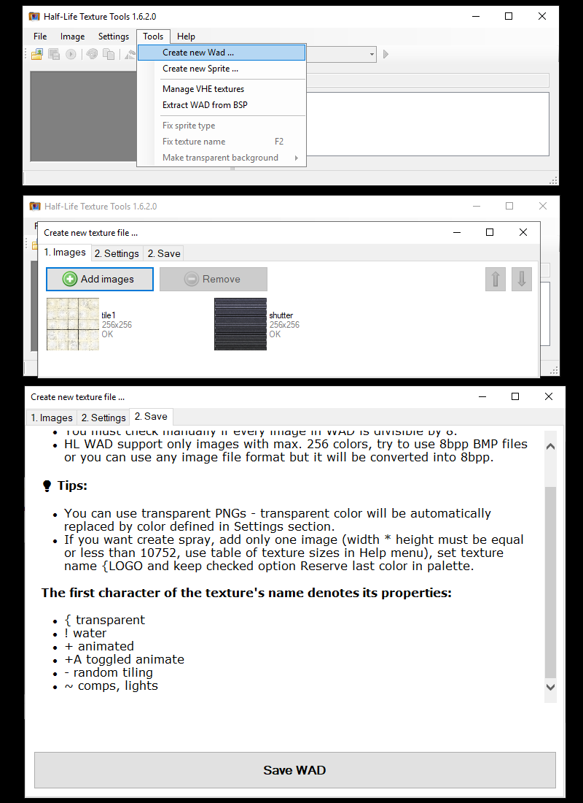
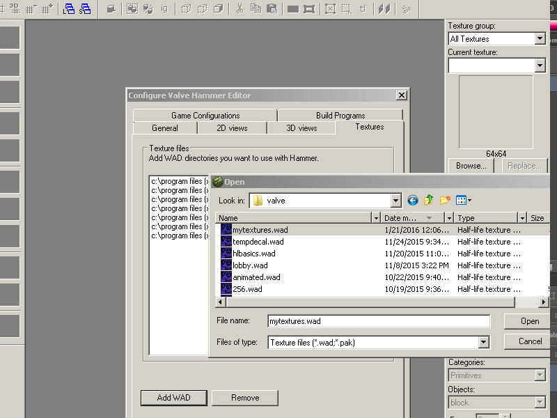
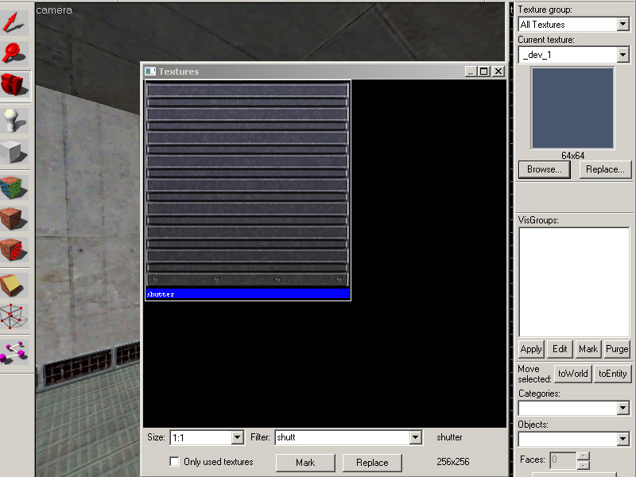
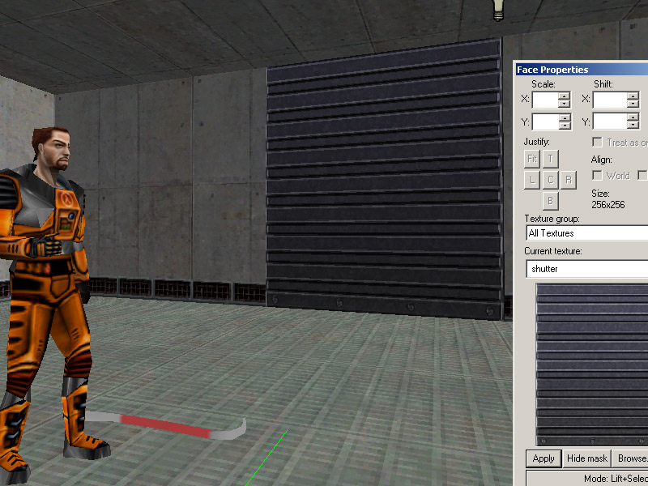
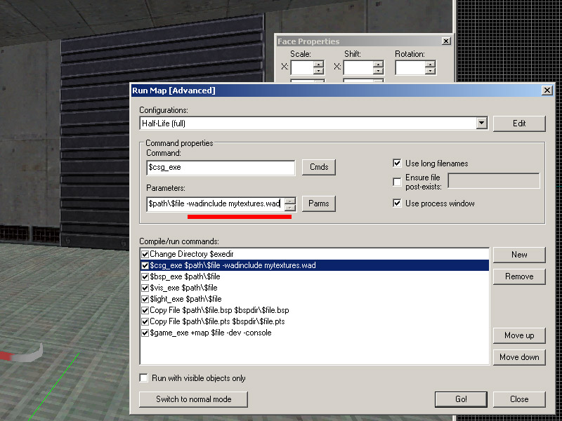

GoldSrc Map Texture Tutorial
PART1 SIMPLE TEXTURES AND WAD PACKING
This is the legacy guide on manual indexing
1) First create a texture. For this I will be making a 256X256 wall texture.

2) When finished simply convert the texture indexed color by going to mode> Index.. and set to any of the "local" palettes (perceptual, selective, and adaptive*). Preview the image. If your image has gradients than start to get a "banding effect", you can lessen these harsh edges by using the Dithering option. Dithering scatters pixels between transitions to make them somewhat smoother.
*Adaptive algorithm reproduces colors most often in image, Perceptual takes spectrum priority of the eye, Selective favors colors that appear in large areas and graphics.
If you do not want to use controlled color selection and/or dithering via this method and just want a fast conversion, Wally can auto-convert RGB24bit images upon import. Save out your image as BMP24bit and skip to step 3.
2a) If you do not have Photoshop, the common option for making an indexed color image is "save as 8bit", "255 colors", or "indexed". If your program is lacking in creating a decent palette or cannot save properly, you can save out your image as a 24bit BMP and use IRFANVIEW to do the 8bit conversion. I encourage to use this way if you are using Paint.net or GIMP because ive found that 8-bit conversion in those programs tend to not reproduce accurate results.
3)When first opening Wally, go to view "options" and make sure Gamma setting is at 1. Go to file and create new Wad package. Choose Half-Life (Wad3) package. You will get an empty tan coloured window. Import your textures or just drag and drop into the tan window area.

4) Save your WAD file and place it into your game directory. Note: you can at any time re-open your WAD file with Wally and add more images, furthermore there is a WAD merge option under the "wizard menu" to combine existing WAD files. For the purposes of this tutorial I am making a wad for each textureset just to keep things uncluttered, but in real practice when making your own keep everything to one wad.
Click here to jump to map setup
Making wads with HL-Tools
Note that HL-Tools supports BMP, PNG, TIFF, JPG. When it auto converts it does not use dithering. Id personally avoid saving your art as jpg due to quality loss before indexing
1) Go to "tools" menu and go to "Create New Wad..." Then add or drag and drop your files. Leave the settings as is, and then save your wad.

2) Verify your created wad. Clicking the background toggles between BG colors and clicking the "tile view" changes from a simple name list to tiled preview thumbnails.

Loading your custom wad and map compile
1) Open up hammer editor and go to options > add WAD and add the custom WAD file

2) Open your map and go to the texture tab and search for the name of your texture

3) Here it is. Now apply your texture and its in the map. Compile your map and observe.

4) Currently the map is only referencing the external WAD file, and the map with the custom textures will only work if your map is accompanied by that specific WAD file. This is fine if you are making an HL mod, but If you want to make a custom map where the custom textures are part of the map file for easy downloading then you have to run a CSG command.

5) In advanced menu go to the CSG.exe line and add -wadinclude mywad.wad after the first commands.
If you are using J.A.C.K editor and get a compile error be sure that the existing parameters have quotations around it and the -wadinclude mywad.wad are outside of the quotes. An example image here.
{kind=link}
Compile the map and the wad package will now become part of the map BSP. This means you can now run the map without the external mywad.wad file.

A trick to verify if the -wadinclude command worked, you can use GCFSCAPE to open a BSP file and see if your custom textures are inside like so: